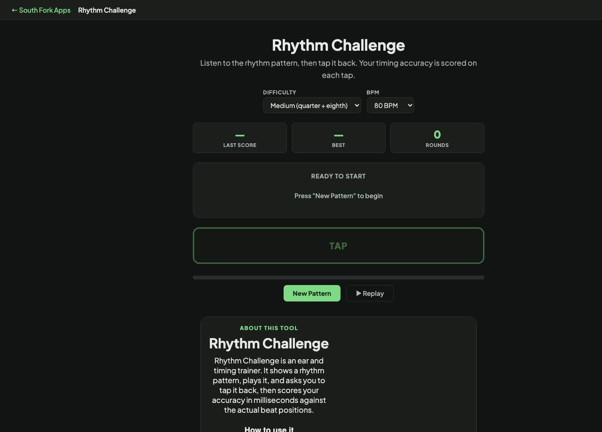

Rhythm Challenge
Listen to the rhythm pattern, then tap it back. Your timing accuracy is scored on each tap.
Rhythm Challenge
Rhythm Challenge is an ear and timing trainer. It shows a rhythm pattern, plays it, and asks you to tap it back, then scores your accuracy in milliseconds against the actual beat positions.
How to use it
- Pick a difficulty: quarter notes only, quarter plus eighth, or eighth plus sixteenth.
- Choose a tempo from 60 to 120 BPM.
- Listen to the pattern, use Replay if you need it, then tap it back.
- Read your timing accuracy and press New Pattern to continue.
What the millisecond score means
Your taps are compared to where each note should fall, and the difference is reported in milliseconds. Trained musicians typically land within 20 to 30 ms of the beat, and most listeners cannot hear an error smaller than about 20 ms at all.
Tempo changes how forgiving the exercise is. At 60 BPM a quarter note lasts a full second and there is room to correct. At 120 BPM a sixteenth note lasts 125 ms, so the same absolute error is a much larger fraction of the note.
Worked example
Working out how tight the timing window is at each end of the tempo range:
- At 60 BPMquarter note = 1000 ms
- At 120 BPMquarter note = 500 ms
- Sixteenth at 120 BPM125 ms
Result: A 30 ms error is 3% of a quarter note at 60 BPM but nearly a quarter of a sixteenth note at 120.
When it helps
- Training timing accuracy with objective feedback instead of guesswork.
- Practising subdivision, which is where most rhythmic errors come from.
- Warming up before a rehearsal or a take.
- Finding out whether you rush or drag, since the error has a direction.
Common mistakes
- Starting at the hardest difficulty. Sixteenth-note patterns punish an unsteady internal pulse rather than teaching one.
- Tapping along with the playback instead of reproducing the pattern from memory. Copying in real time trains a different skill.
